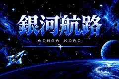
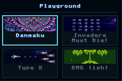
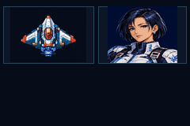
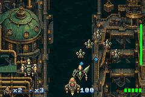
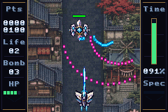

Current 4.10 Games splash · current ROM graphicsHome composition · source-rendered from current in-game graphics
Choose a mode and shipPLAYGROUND mode selector · mGBA capture from current ROMSelect Ship · ASTRA and captain MIRA VALE · source-rendered selection art
COSMIC CONVERGENCE · CRIMSON NEBULACLOCKWORK EMPIRE · BRASSWIND DOCKYARDPLAYGROUND · DANMAKU